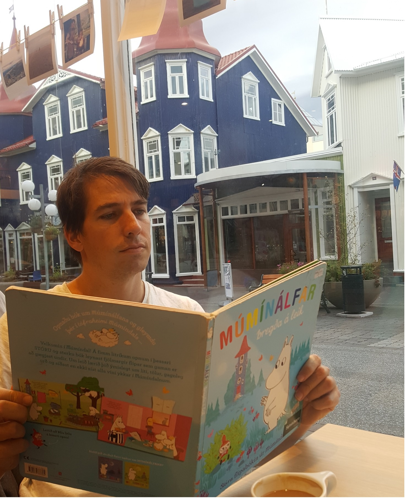

|  |
Ronen Eldan's home pageדף הבית של רונן אלדן |
|
| I'm faculty in the Department of Mathematics at the Weizmann Institute of Science. | ||
| (Currently, I'm on Sabbatical at the Institute for Advanced Study, Princeton) | ||
| E-mail :My first name followed by my last (no dashes and such) at gmail.com | ||
| Address: Department of Mathematics, Weizmann Institute of Science, POB 26, Rehovot 76100, Israel | ||
| I manufacture latex and latex-related products. |
| My interests, on a low resolution: Anything that's high-dimensional, whether it's Probability, Functional Analysis, Metric Geometry, Computational Geometry, Mathematical Physics or Learning Theory. |
| My interests, on a higher resolution: Functional inequalities, Concentration of measure, High-dimensional convex geometry, Stochastic calculus, High-dimensional probabilistic algorithms, Probabilistic structures (with a geometric nature), Gaussian fields, Central limit theorems, Interacting particle systems, Random Graphs, Boolean analysis, Convex optimization, Neural networks, Computational Complexity. |